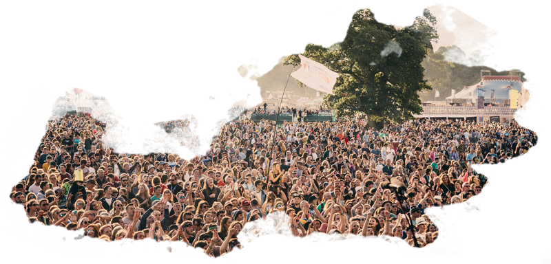
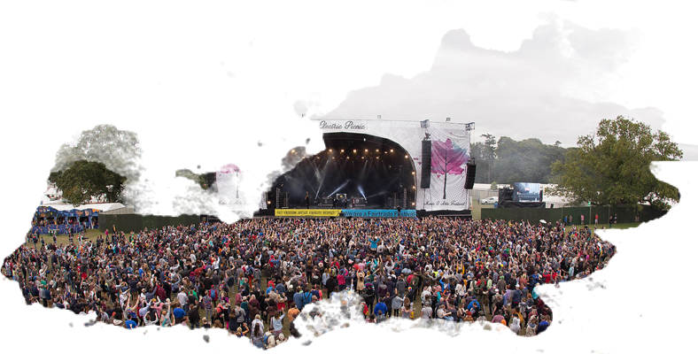
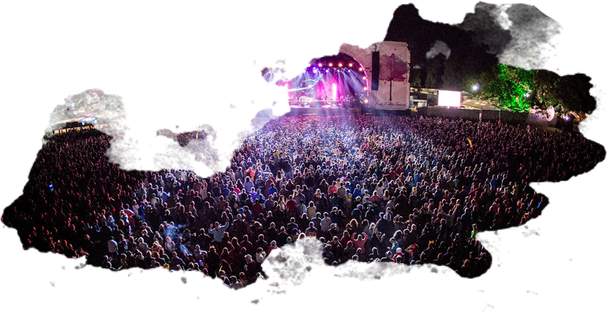

What we did throughout the years
Electric Picnic 2004 was the year it all started. It started as one day event for 10,000 people on a gloriously sunny September Saturday . It was billed as a Boutique music festival and with such a diverse line up of not just music it promptly sold out. Nobody quite new what to expect but with a line-up including Groove Armada, 2 Many DJ’s, Super Furry Animals, Mylo and Soulwax, comedy and theatre, great food Electric Picnic started off with a bang.
NThe festival was christened ‘The festival of good intentions’, with its laid back attitude and nothing else in the country to rival it, it is no wonder that Electric Picnic became firmly entrenched as a must go to event in the Festival calendar.
Electric Picnic 2016
Electric Picnic 2016 saw 55,000 Picnickers descend upon the idyllic setting of Stradbally Hall for a sold-out weekend of incredible music, captivating entertainment, unique experiences and unforgettable memories.
Friday night saw festival favourites The Chemical Brothers take to the stage for a stunning headline performance filled with mind-blowing visuals and hits such as 'Hey Boy Hey Girl' and 'Block Rockin' Beats'. Picnic veterans LCD Soundsystem made a much welcome return to the festival on Saturday night with a high-energy show packed with classics from their critically acclaimed back catalogue. Noel Gallgher's High Flying Birds were one of the most highly anticipated performances of the weekend, and they did not disappoint. The band delivered an outstanding 75 minute set and Noel even treated us to some Oasis tracks.
The Main Stage was brought to a close on Sunday night by Lana Del Rey and New Order. Lana's haunting vocals mesmerised the masses with her dreamy pop anthems, while New Order brought us back in time with songs such as 'Blue Monday' and 'Bizzare Love Triangle'.
There was an eclectic mix of acts across the festival throughout the weekend including disco-don Todd Terje, indie heroes The Shins, grime kingpin Skepta, techno legend Adam Beyer and synth-pop stars Years & Years.
The Comedy Stage played host to the biggest comedy line up the festival has seen to date with Dylan Moran, David O'Doherty, Rubberbandits and Reginald D Hunter headlining the stage. The line up also featured a host of hot Irish talent including Aisling Bea, Deirdre O'Kane, Eric Lalor and Joe Rooney.
There were also some new additions to the festival in 2016 with the introduction of swimming in the beautiful setting of Stradbally lake. The Hazel Wood brought a world of art and performance to the woods through interactive theatre, shadow puppetry, visual displays, captivating art and much more. Over the weekend, All City Records, District 8 and Sunday Times! curated the line up for Anachronica: a new immersive experience which replicated an abandoned city in the woods.
Picnickers also enjoyed the mystical beauty of Body&Soul, the mobiletropolis that is Trailer Park, the reggage vibes of Trenchtown, thought provoking conversations in Mindfield and music delights from Other Voices, Salty Dog and the Jerry Fish Electric Sideshow.
See you all in September 2017 for the 14th edition of Electric Picnic that is sure to be filled with even more memorable moments.
Electric Picnic 2015
September 4th-6th 2015 saw the best and biggest Electric Picnic to date, keeping its unique, intimate appeal with a sell-out crowd of almost 50,000 to Stradbally Estate for the weekend.
As the sun shone down on Picnickers over the course of the weekend, revellers of all ages got to enjoy everything that Ireland’s most popular festival has to offer; art, theatre, comedy, food and of course music.
No stranger to festival headline slots, Underworld settled the crowd into a weekend of partying on Friday night after the magnificently talented Grace Jones left the audience in awe following a stunning performance filled with pole dancing and hula-hooping. Headlining Saturday night were Blur as Damon Albarn leapt off the stage and sent the crowd into a roaring frenzy for the ‘Girls and Boys’ stars. Just two years after walking out on stage to an empty tent, Sam Smith blew thousands of Picnickers away with his heart-wrenching lyrics resulting in a massive sing-a-long moments across the festival site…. You could hear a pin drop.
Florence + the Machine put on a mind-blowing show in front of tens of thousands of Picnickers closing the main stage for 2015 on Sunday night. Sunday also saw music icons The Boomtown Rats and Manic Street Preachers entertain the masses.
New to Electric Picnic for 2015 was Despacio; a unique celebration of sound brought to festival goers in a staggering six hour set each night from a personally designed sound system in their very own tented stage which proved to be extremely popular with Picnickers as crowds queued outside waiting to get in each night!
Theatre of Food held a mouth-watering schedule for 2015, which was theme was Food for Life! There were healthy food demonstrations from the Happy Pear brothers and the Kemp sisters over the weekend along with demonstrations from Michelin-star chefs Ross Lewis, Derry Clarke, JP McMahon and Kevin Thornton.
Monday morning saw a fantastic end to a new year of a greener Electric Picnic with numerous new recycling initiatives around the site as thousands of attendees packed up their tents and left them at various donations points throughout the site for donation to Calais.
Electric Picnic 2014
This year’s Electric Picnic festival took place the weekend of the 29th of August and saw an attendance of 41,000 people, making it the biggest and most successful year for EP. The fans flooded in throughout the weekend, excited and eager to engage in the incredible music and thrilling entertainment that the festival had to offer across the 42 stages in Stradbally. As Ireland’s continuous favourite and best-loved festival, the acts lined up were sure not to disappoint.
The headliners for 2014 gave brilliant performances and the crowd was certainly pleased with artists such as OutKast, Blondie, Beck and Paolo Nutini. When the audience weren’t repeatedly singing ‘Hey-Ya’, they were happily bopping along to the fun musical numbers from London Grammar, Duke Dumont and Lily Allen; whilst some were found showing off their own moves on stage with Chic, and of course the performance from the Irish favourite Hozier was definitely one to remember.
TSimon Amstell and Jason Byrne were ones to watch on the comedy stage while others swooned to the Body & Soul to catch acts Glass Animals and Young Fathers.
TThe tour-de-picnic returned for its sixth year allowing festival fans to raise money for charities while securing their ticket to Electric Picnic, by completing the 80km journey to Stradbally. This year the charities chosen were the Irish Youth Foundation INDY Bikes Project, Special Olympics and Barnardos.
TThere were also some new additions to Electric Picnic this year with Derry Clarke’s ‘Fine Dining Picnic’ which allowed the Michelin star chef to host the ultimate picnic feast to raise money for the National Suicide Charity Console. The banquet scene took place five times over the weekend and tickets went for €120, making it stand out as an extraordinary and distinctive festival experience. Adding to the new features of the festival was the Other Voices stage. This stage adds some mystery to Electric Picnic as the details of the line-up are kept quiet until August, only revealing that the collaborations between the Irish and international artists will be somewhat enchanting. Silences, Tiny Ruins, and Mirel Wagner were acts to perform on the Other Voices stage.